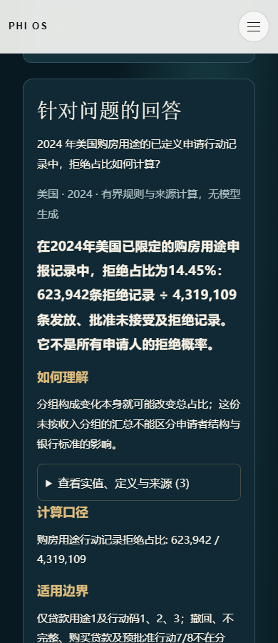
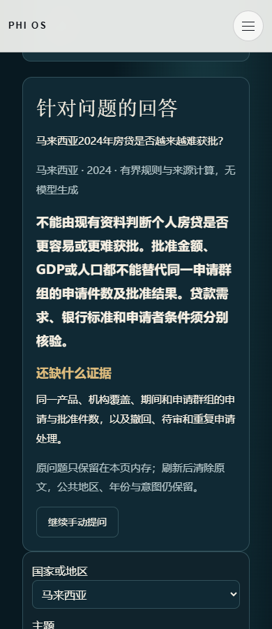
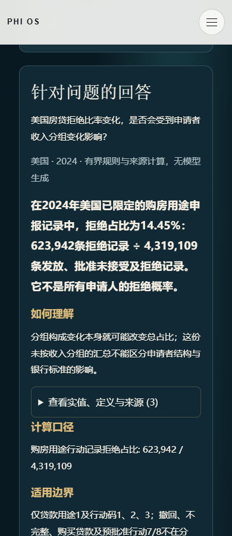
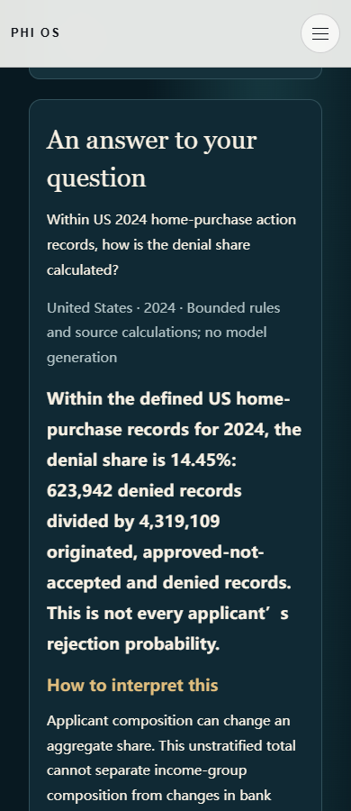
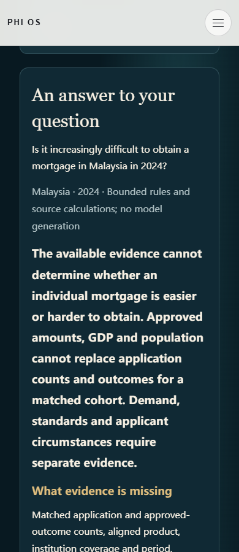
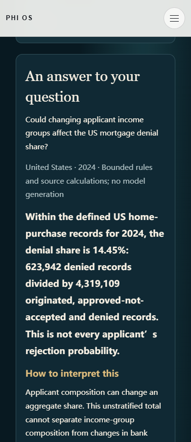
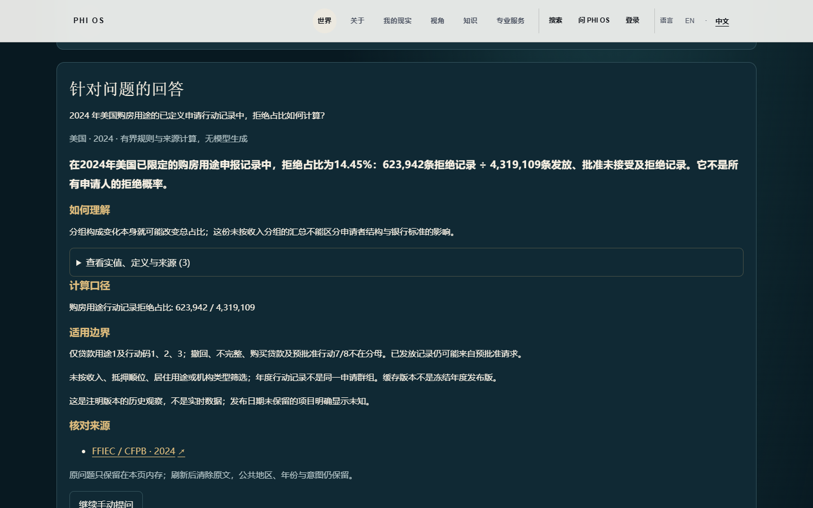
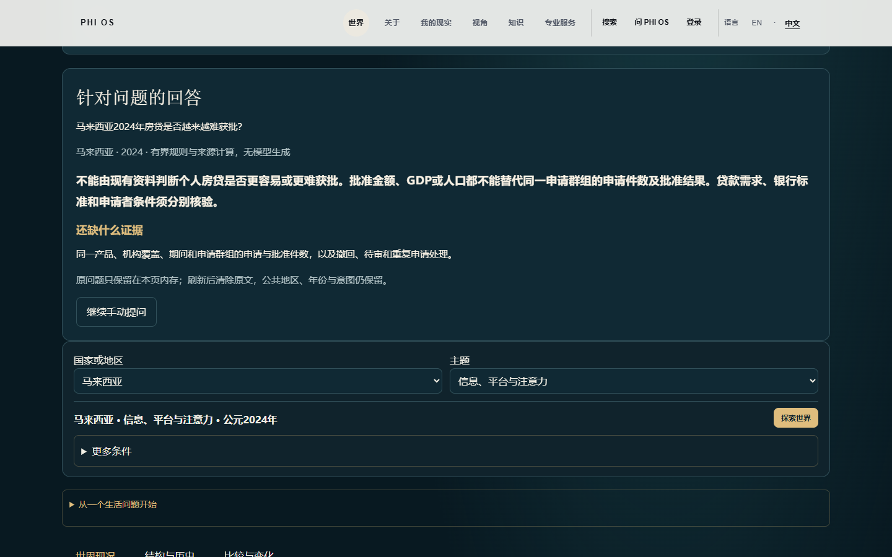
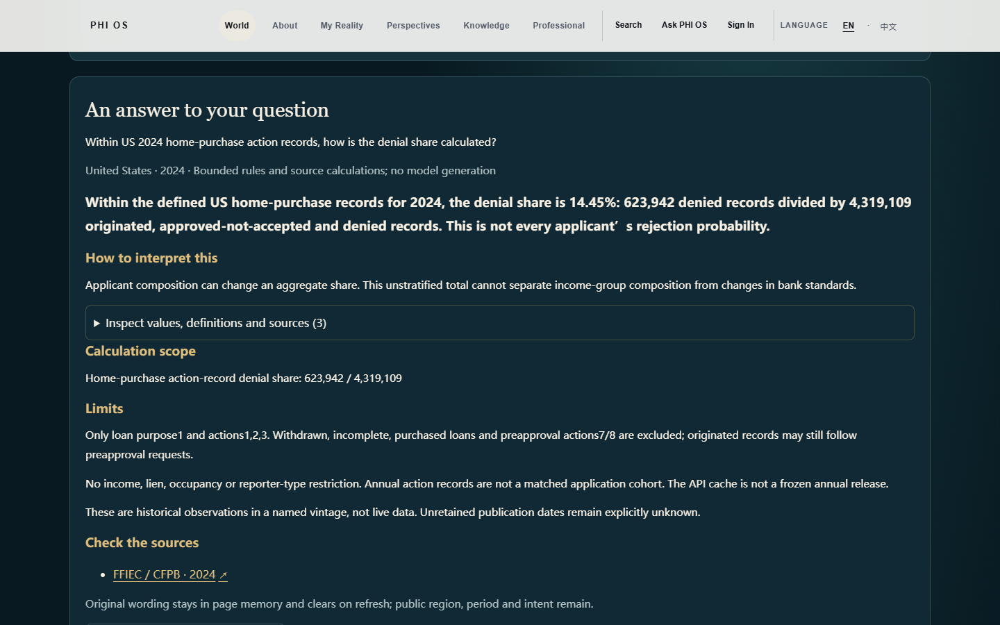
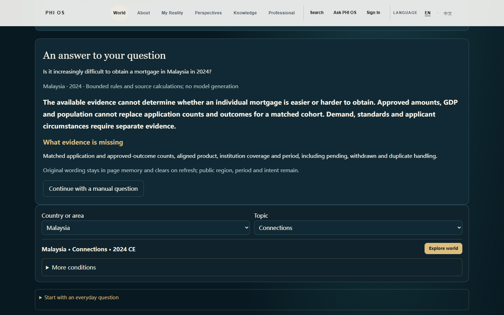

READY_FOR_GATE3_P1_HUMAN_REVIEW · LOCAL_PRODUCT_CANDIDATE
真实问题 → 既有GET API → 原始来源计数 → 程序计算 → 直接回答与来源。不是静态答案页。HMDA2024：623,942 /4,319,109 =14.45%；2025：607,818 /4,358,716 =13.94%。
马来西亚获批概率仍无法测量；SLOOS银行标准与需求不是拒贷率。旧16次失败原样保留；本轮16次陌生问题中2次有界数值回答、2次通用机制、8次部分回答、4次未覆盖。
打开实际World中文产品 · Open actual World product in English
若预览已关闭，运行 node tools/review/world-r3/gate3-p1/local-server.mjs --serve ，使用打印的本机地址。真实输入问题再验证；刷新只恢复公共范围。
唯一人审入口 · 候选源码SHA · 已有文件精确diff · 故障与兼容性证据 · 额外转述 · 原始字节复算










本地候选，不是生产。Provider0/USD0；D1生产写入0；提交/推送/部署0。生产身份与生产隔离未验证，其他窗口修改保持。
Final source/history integrity · Fresh Functions compile · Full local router proof · Actual CSP and language switch